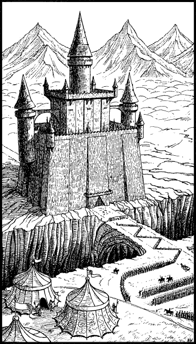

6
You share the officer’s horse as he leads his company back along a route they have already ridden. Steadily the road winds upwards through the hills towards a ridge of yellow rock and, as you reach the crest of the ridge, you catch your first awe-inspiring glimpse of Torgar.

The walls of this grim city-fortress stand upon the brink of a ravine cut deep by centuries of rushing water. A natural causeway of stone spans this dark chasm and provides the only means of approaching Torgar from the south. Its position and its defences seem impregnable. It commands the only road into the barren land of Ghatan, and any who dare travel that road must pass over the causeway and through the city’s great iron gate.
In the past there have been few who would venture willingly to Torgar, but now the causeway and its approaches swarm with such men. They are the soldiers of Talestria and Palmyrion, and they have come with their engines of war to lay siege to this grim Drakkarim fortress.
The scout officer spurs his horse away from the ridge and you are carried towards a cluster of tents that stand on high ground overlooking the siege-works. As you arrive, a group of knights steps forward to take the horse’s reins. You dismount with the officer and follow as he enters the largest tent.
If you have ever visited the land of Talestria in a previous Lone Wolf adventure, turn to 45.
If not, turn to 346.